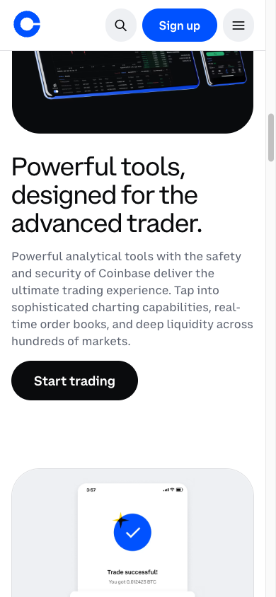
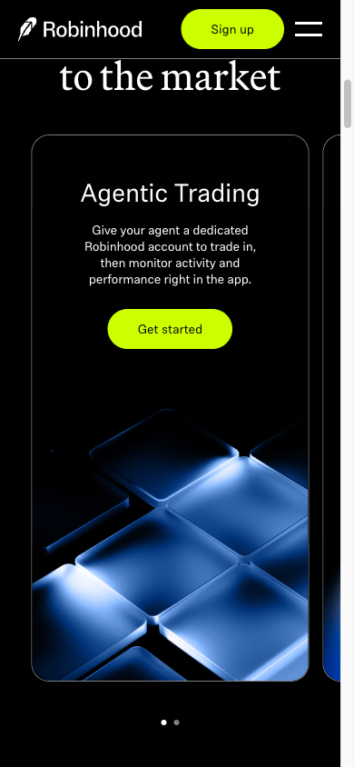
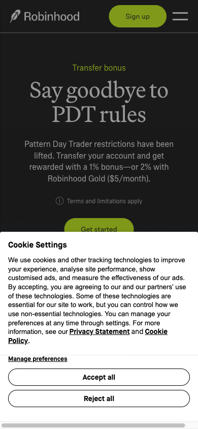
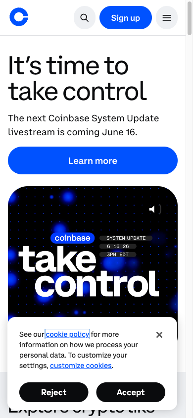

Master Research
Synthesis of all research phases — product model, AARRR, competitive analysis, trust benchmark, and UX patterns. Source of truth before wireframes.
Key Conclusions
News Junkie is the primary segment. Largest audience, fiat on-ramp removes the Web3 barrier, directly aligned with JTBD J2. Confirmed.
No competitor explains "why is the price this?" — our differentiator and foundation of Story-driven UX. Confirmed.
Activation is the biggest risk. Fiat first + 4-screen Robinhood-style onboarding. Skip demo bet (Manifold evidence). Updated.
Regulatory badges (FSCS/SIPC) unavailable to us — replaced with on-chain transparency. Confirmed.
CLOB vs AMM for MVP — open question. Azuro vAMM documented as decentralized path. [?]
Sports markets needed sooner. Kalshi 89% sports, Polymarket 60%+. Consider one sports category at MVP for volume floor. [?]
Fee model unresolved. Industry moved to fee-per-trade. "Fee on win" is softer but earns less. Decide before building fee logic. [?]
What we build and for whom
Prediction market platform. YES/NO bets on real-world events. Stablecoins (USDC/USDT). Mobile-first. Goal — the most understandable platform for those who aren't in crypto.
Objectives
| # | Goal | Metric |
|---|---|---|
| O1 | Trusted platform for prediction markets outside the US | MAU, NPS, retention 30d |
| O2 | Web3 betting for users with no crypto experience | % without prior wallet → first bet |
| O3 | Engaged community around events | DAU/MAU ratio, shares/user |
| O4 | Stable trading volume | Monthly volume, revenue/user |
Audience — 3 Segments
News Junkie
Actively follows the news: politics, geopolitics, tech. Has an opinion on everything. Not necessarily into crypto. Wants to "put money" on their opinion simply and without complexity.
Crypto Native
Already in Web3. Has MetaMask. Knows DeFi. Wants to monetize crypto knowledge and find more markets than Polymarket offers.
Crossover Bettor
Already bets on sports. Looking for more intellectual markets where analysis matters. Elevated from post-MVP — sports revenue data (Kalshi 89% from sports) suggests this segment drives volume earlier than expected.
AIDA → Action by segment
Primary segment (News Junkie):
SEO, news aggregators, Twitter.
"The market says 34% — what do you think?"
Live events, context, how odds work — explained directly in the product.
An event they're already discussing + "bet $10 right now — 2 minutes".
Google/Email → fiat card on-ramp → guided first bet.
AIDA ↔ AARRR Mapping
| AIDA | AARRR | Product Focus |
|---|---|---|
| Attention | Acquisition | SEO, Twitter, media |
| Interest | Acquisition → Activation | Onboarding, first market |
| Desire | Activation | Guided first bet, fiat on-ramp |
| Actions | Activation → Retention → Referral | First bet, notifications, share card |
Growth funnel
Hypothetical analysis at the start of the product. Targets require validation after MVP launch.
Product decisions by stage
| Stage | MVP Decision |
|---|---|
| Acquisition | Every market = SEO page with dynamic og:image showing live odds |
| Activation | Fiat on-ramp on first screen + 4-screen Robinhood "swipeys" onboarding. Skip demo bet (Manifold evidence). Minimum stake $1–5 real money. |
| Retention | Smart notifications (price movement + deadline) + personal feed by category + post-resolution loss screen ("here's what happened, here's a similar market") + prediction streak mechanic |
| Revenue | Fee shown explicitly before confirmation. Model TBD: fee on win vs fee per trade. [?] |
| Referral | Share card after every resolution (auto-generated) + public prediction track record from day one (eToro CopyTrader model) |
Retention: three levels of return
| Stage | When | What happens | Notification |
|---|---|---|---|
| Hot | Day 1–3 | Watching odds movement | "YES moved from 45% to 61%" |
| Warm | Day 4–14 | New event in favorite category | "New market: Will Zelensky meet Trump?" |
| Cold | Day 15+ | Leaderboard, resolution | "Your position resolved. You won $47" |
Comparative analysis v_refresh · 3 groups
Three competitor groups
Polymarket — crypto CLOB, global, largest volume ($9B+ 2024)
Kalshi — CFTC, US fiat, $263.5M fee revenue 2025
Futuur — crypto+fiat hybrid, global
DraftKings Predictions — launched Dec 2025, CFTC, 38 US states
Azuro Protocol — decentralized AMM, sports-focused
Bet365 — sports betting, 80M+ users, same JTBD for sports events
Betfair Predicts — exchange testing prediction market UI wrapper (beta Apr 2026)
eToro — social copy trading, 35M+ users, IPO May 2025
Manifold — play-money only (returned March 2025)
DraftKings DFS — daily fantasy, skill-based, 9M+ active users
Revolut — 50M+ users, trust signals, 10-min onboarding
Coinbase — best crypto onboarding for mainstream, Nasdaq listed
Robinhood — "commission-free," 4-screen onboarding, $100B valuation
Cash App — crypto in 3 taps, simplest money UX
Duolingo — best engagement loop: streaks, loss-aversion, habits
Matrix by axis — 5 most relevant (v_refresh)
| Axis | Polymarket | Kalshi | Futuur | DraftKings Pred. | Bet365 |
|---|---|---|---|---|---|
| Audience | Crypto natives, DeFi, global (no US) | US-first, TradFi, sports bettors converting | Global, crypto + fiat hybrid | US (38 states), mainstream sports fans | Global, 80M+ registered, fiat only |
| Foundation | CLOB on Polygon, USDC, embedded wallets (2025) | CFTC-regulated exchange, USD fiat, ACH/card | Crypto + fiat hybrid, multi-currency | CFTC event contracts, launched Dec 2025 | Classic bookmaker, decimal/fractional odds |
| Key mechanisms | Taker fee 0.75–7% by category, maker rebate 20–25%, geopolitics free | Order book, variable fee by probability, $263.5M fee revenue 2025 | Probability bars per outcome, Yes/No per option [? fee %] | $0.01/contract fee, combos (parlays) added May 2026 | Fixed house odds, cash-out, live streaming |
| Trust | On-chain + UMA resolution, $9B+ 2024 volume, weak on fund protection copy | CFTC = highest institutional trust, US banking partners | No regulatory badge, small track record [?] | DraftKings brand + CFTC, new = limited history | 20+ year brand, 30+ licenses, responsible gambling visible |
| Monetization | Taker fees by category, $1M+/day revenue Apr 2026 | Exchange fees, $1.5B annualized revenue 2026 | Commission on bets [? %] | $0.01 per contract each side + exchange fee | House margin ~4–7% baked into odds |
3 Common patterns
Horizontal category nav + bottom tab bar
De-facto standard across HARD and SOFT groups. Polymarket (4 tabs), Kalshi (4 tabs), Bet365, DraftKings — all use this. Absence = unrecognizable platform.
Probability % (or equivalent odds) as the main number
On every card and detail screen. Even Bet365 makes live odds the dominant card element. It is the market's "price" and "game state" at once.
Probability chart over time
From a simple line (Manifold) to candlestick (Kalshi). DraftKings Predictions added charting for the same reason. Movement = engagement.
3 Key differences
Regulation defines the product
Kalshi = CFTC + US fiat + $1.5B annualized 2026. Polymarket = global + crypto (USDC). DraftKings = CFTC + 38 states. For a global non-US product, Polymarket and Futuur are the structural analogs.
Sports vs events: sector is bifurcating
Kalshi 89% of revenue from sports. Polymarket sports >60% open interest Oct 2025. Our events-first thesis targets the underserved direction — at lower volume in the near term.
CLOB vs AMM vs fixed odds
Polymarket + Kalshi = order book (CLOB). Azuro = decentralized AMM. Bet365 = house-set fixed odds. For cold start, CLOB has the liquidity chicken-and-egg problem. [?]
What's missing across all competitors — our gap
Competitor screens


Trust & First-Time Credibility
Trust is the #1 value of our audience (20–40, real money). This is where competitors are weakest (Polymarket: 19/40). This is where wireframe decisions grow from.
Scores (1–5) · 8 criteria × 5 products
| Criterion | Revolut | Coinbase | Robinhood | Kalshi | Polymarket |
|---|---|---|---|---|---|
| C1 Regulatory transparency | 5 | 5 | 4 | 5 | 2 |
| C2 Funds protection | 5 | 5 | 4 | 4 | 1 |
| C3 Fee transparency before action | 4 | 3 | 5 | 3 | 2 |
| C4 Social proof | 5 | 5 | 4 | 3 | 4 |
| C5 First impression clarity | 4 | 4 | 5 | 4 | 3 |
| C6 Onboarding friction | 3 | 3 | 3 | 2 | 2 |
| C7 Risk communication | 3 | 4 | 3 | 4 | 3 |
| C8 Resolution / rules clarity | 3 | 4 | 3 | 3 | 2 |
| Total | 32 | 33 | 31 | 28 | 19 |
Top 3 mechanisms to carry into MVP
Concrete promise of funds protection
"Your USDC are stored 1:1. We never lend them without your permission." On the first deposit screen and in How it works. Closes the user's main fear before they voice it.
Social proof block on the homepage
"$X in trades · N users · Rating Y" — compact block after the hero, before the market list. "If that many people trust it — worth trying."
Fee transparency at the moment of action
"Platform earns $0.40 if you win" — on the confirmation screen before submitting. Hidden fees = the #1 cause of churn.
1 Mechanism that won't work
Regulatory badges — FSCS / SIPC / FDIC / CFTC
Revolut, Robinhood, Kalshi display official regulatory shields. We don't, and won't (these are legal obligations, not decorations). Similar elements without the real backing will destroy trust the moment a user checks. FTX built a "bank-like look" without bank-like guarantees — the outcome is known.
Alternative: on-chain transparency — "All settlements are on-chain. You can verify every transaction."
Screens — Trust signals







Interaction architecture
The key behavioral pattern of our audience is Event-triggered arrival: the user comes when something happens. How we greet them "arriving from a news story" determines activation and the first bet.
5 Fundamentally different patterns
Story-driven Discovery
Event = narrative unit: context + why it matters now + what the market says + resolution conditions → bet CTA.
Where: nowhere in PM fully. Partially — Metaculus (question descriptions), The Athletic (sports + context).
Event Feed
Algorithmic feed of cards. User scrolls, stops on what catches their eye.
Where: Polymarket, Kalshi, Twitter, TikTok. Breaks with <20 markets and for new users.
Portfolio / Position-first
First screen — open positions, P&L, deadlines. New markets in a separate tab.
Where: Robinhood, Binance. Empty state for new users = demotivation.
Guided Challenge
"Bet of the day" — one choice, two buttons, game loop. Minimum cognitive load.
Where: Duolingo, HQ Trivia. Gets boring after 5–7 sessions.
Market Board
Table of all markets: price, volume, 24h change. Filters are the main navigation.
Where: Kalshi advanced, Bloomberg, Binance. New users leave immediately. Kills emotional connection to the event.
Why Story-driven — 3 reasons
Direct match with JTBD J2
"Follow events with a real stake" — this is about context, not numbers. The user arrives from a news story and wants to understand what's happening. Story-driven gives that context inside the product.
Closes the market's main gap
No competitor explains why the price is what it is or what will affect the outcome. Markets are isolated questions without context. This is our differentiator.
Builds trust without regulatory badges
Clear event description + resolution conditions + source = the platform knows what it's talking about. Trust through content transparency — our alternative to FSCS/SIPC.
Condition X for Event Feed: >30 active markets and the user has already placed their first bet. Story-driven for first contact → Feed for return visits.